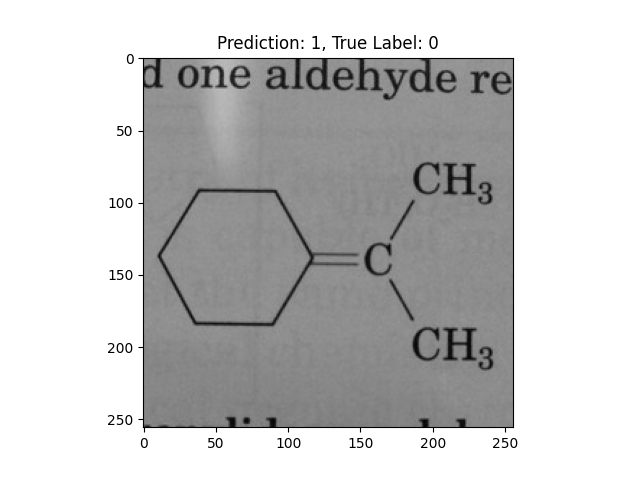

Introduction
Convolutional neural networks (CNNs) are a deep learning technology to use for classifying images. For this demonstration I used images from an introductory organic chemistry class. My problem was one of binary classification: could the CNN distinguish images with a structure called a benzene ring from images without a benzene ring? While I encountered challenges of working with a small dataset (with 205 images in each class), I did train the CNN to 76% accuracy on the test data (see complete metrics below).
Methods
Technology used, source code, and image source
The software I used was Python, TensorFlow, and Keras. The source code is on GitHub along with all the training and test images. I obtained 410 images of molecular structures by taking photographs at various angles under many lighting conditions from the text Organic Chemistry, 6th Edition by John McMurry along with its accompanying student solutions manual. For each image, I cropped out all the text and converted the images to grayscale so that the classifier would not learn color as an indicator in the classification task.
Dataset description and classification problem
A detailed description of the organic chemistry involved in the training, test and validation datasets is beyond the scope of this article; however, a quick explanation about the data, as well as why the data have meaning in chemistry applications, should prove useful in understanding the CNN setup described here. An important part of studying chemical molecules involves breaking them into smaller substructures and analyzing each substructure individually. By understanding how each part works in the entire chemical structure, one can understand the properties of the compound as a whole. One important strucuture in organic chemistry is called a “benzene ring”. When the ring is found in a standalone configuration, with no other atoms surrounding it, it forms the compound benzene. Here is a diagram of benzene:

Other parts of a molecule can be attached to these benzene rings, as shown below:
Other compounds do not contain these rings, as seen in the following molecules:
The task for the CNN was binary classification to distinguish images of molecules with benzene rings from those without benzene rings.
Network architecture
Below is a snippet of Python code that defines the network (the complete code is at the bottom of this document). Basically, it consists of frozen VGG16 layers with linear classification layers on top of the VGG16 layers.
class Net(nn.Module):
def __init__(self, pretrained=True, freeze=True):
super(Net, self).__init__()
self.vgg16_layers = models.vgg16(weights=models.VGG16_Weights.IMAGENET1K_V1)
if freeze:
for param in self.vgg16_layers.parameters():
param.requires_grad = False
dummy_input = torch.randn(1, 3, 256, 256) # Assume input size is 256x256
output_size = self.vgg16_layers(dummy_input).view(1, -1).shape[1]
self.classifier = nn.Sequential(
nn.Linear(output_size, 256),
nn.Linear(256, 128),
nn.Linear(128, 64),
nn.Linear(64, 1),
nn.Sigmoid()
)
def forward(self, x):
x = self.vgg16_layers(x)
x = torch.flatten(x, start_dim=1)
return self.classifier(x)Size of dataset
In each of the train and test datasets I kept the classes roughly balanced, as shown in the table below:
| Set | Positive (benzene ring) class | Negative class |
|---|---|---|
| Train | 151 | 149 |
| Test | 57 | 53 |
Initial Training Loss History (Binary Crossentropy)
For the initial runs to determine how many epochs create the best validation loss, I trained the model for 50 epochs. Ultiamtely, I chose 9 epochs for the final training because that was the lowest training loss before it the model started to overfit.
Results
Binary classification scores:
| Metric | Score |
|---|---|
| Accuracy | 0.7636 |
| Precision | 0.7067 |
| Recall | 0.9298 |
| F1 | 0.8030 |
False negative cases
| Image | What the model got wrong |
|---|---|
| -OH and -NO2 groups confused the model. | |
| -NO2 groups confused the model. | |
| -CH3 and -Cl groups confused the model. | |
| -OH and -NO2 groups confused the model. |
False positive cases
| Image | What the model got wrong |
|---|---|
| A hexagon with single lines does not represent alternating double bonds. | |
|  | A hexagon with single lines does not represent alternating double bonds. |
| A hexagon with single lines does not represent alternating double bonds. | |
| A pentagon with single lines does not represent alternating double bonds. | |
| A pentagon with single lines does not represent alternating double bonds. | |
| A hexagon with single lines does not represent alternating double bonds. | |
| A hexagon with single lines does not represent alternating double bonds. | |
| A hexagon with single lines does not represent alternating double bonds. | |
 |
A single double bond is not correct. |
| This one is way off base. | |
| A single double bond is not correct. | |
| A hexagon with single lines does not represent alternating double bonds. | |
| A single double bond is not correct. | |
| A hexagon with single lines does not represent alternating double bonds. | |
| A hexagon with single lines does not represent alternating double bonds. | |
| A single double bond is not correct. | |
| A pentagon with an O in it is incorrect. | |
| A hexagon with single lines does not represent alternating double bonds. | |
| A single double bond is not correct. | |
| A single double bond is not correct. | |
| This one is way off base. | |
| A double bond and a triple bond with a hexagon are not correct. |
Discussion
False positives dominated the model’s classification errors, where it seemed to confuse single-line hexagons and pentagons for benzene rings. On the flase negative side, too many groups off the benzene ring confused the model into false negative cases. If I were to do this project again in the future, I would want to get many more images for training and testing. I think that this model had problems due to the small dataset.
Python source
This is the source code that trained the network in a Google Colab notebook. Note that I did a lot of performance monitoring (to ensure I was using the GPU to its full potential) that I did not show in this document.
"""OrganicDL Classifier V03.ipynb
Automatically generated by Colab.
Original file is located at
REDACTED
## Organic DL v02: Classifying images of molecules with a VGG16 based classifier using PyTorch
First, setup the environment by determining the CUDA version, installing the dependencies with pip, and verifying GPU availability.
"""
!nvcc --version
gpu_info = !nvidia-smi
gpu_info = '\n'.join(gpu_info)
if gpu_info.find('failed') >= 0:
print('Not connected to a GPU')
else:
print(gpu_info)
from psutil import virtual_memory
ram_gb = virtual_memory().total / 1e9
print('Your runtime has {:.1f} gigabytes of available RAM\n'.format(ram_gb))
if ram_gb < 20:
print('Not using a high-RAM runtime')
else:
print('You are using a high-RAM runtime!')
!pip install torchmetrics
"""### Import necessary modules"""
import os
import random
import time
import numpy as np
import torch
import torch.nn as nn
import torch.optim as optim
from torchvision.datasets import ImageFolder
from torchvision import transforms
from torchmetrics import Accuracy, Precision, Recall, F1Score
import torchvision.models as models
import numpy as np
import matplotlib.pyplot as plt
from google.colab import drive
"""### Report GPU environment"""
print("CUDA Available:", torch.cuda.is_available())
print("CUDA Version:", torch.version.cuda)
print("Current GPU:", torch.cuda.get_device_name(0) if torch.cuda.is_available() else "None")
"""### Force PyTorch to use CUDA device 0"""
# Check if CUDA is available
print("CUDA available:", torch.cuda.is_available())
# If available, get device count and device names
if torch.cuda.is_available():
print("Device count:", torch.cuda.device_count())
for i in range(torch.cuda.device_count()):
print(f"Device {i} name:", torch.cuda.get_device_name(i))
# Set default device to GPU if available, otherwise CPU
device = torch.device("cuda" if torch.cuda.is_available() else "cpu")
print("Using device:", device)
# To force operations to use GPU, move tensors to the device
x = torch.rand(5, 3)
x = x.to(device) # This moves the tensor to GPU if available
# To verify a tensor is on GPU
print("Tensor is on CUDA:", x.is_cuda)
"""### Set the RNG seeds"""
def set_seed(seed=42):
"""Set all seeds to make results reproducible"""
torch.manual_seed(seed)
torch.cuda.manual_seed_all(seed)
torch.backends.cudnn.deterministic = True
torch.backends.cudnn.benchmark = False
np.random.seed(seed)
random.seed(seed)
os.environ['PYTHONHASHSEED'] = str(seed)
print(f"Random seed set as {seed}")
set_seed()
"""### Mount Google Drive
Training, test data is on Google Drive.
"""
drive.mount('/content/drive')
"""### Prepare data augmentation and image loader"""
train_transforms = transforms.Compose([
transforms.RandomHorizontalFlip(),
transforms.RandomRotation(45),
transforms.ToTensor(),
transforms.Resize((256, 256)),
])
test_transforms = transforms.Compose([
transforms.ToTensor(),
transforms.Resize((256, 256)),
])
dataset_train = ImageFolder('/content/drive/MyDrive/Colab Data/OrganicDL Train Test/train', transform=train_transforms)
dataset_test = ImageFolder('/content/drive/MyDrive/Colab Data/OrganicDL Train Test/test', transform=test_transforms)
dataloader_train = torch.utils.data.DataLoader(dataset_train, batch_size=32, shuffle=True)
dataloader_test = torch.utils.data.DataLoader(dataset_test, batch_size=32, shuffle=True)
"""### Look at sample images
One image each from the negative (non-benzene) and positive (benzene) classes.
"""
first_negative_image_idx = None
first_positive_image_idx = None
for idx, (image, label) in enumerate(dataset_train):
if first_negative_image_idx is None and label == 0:
first_negative_image_idx = idx
break
for idx, (image, label) in enumerate(dataset_train):
if first_positive_image_idx is None and label == 1:
first_positive_image_idx = idx
break
image, label = dataset_train[first_negative_image_idx]
plt.imshow(image.permute(1, 2, 0))
plt.title(f"Label: {label} (negative class)")
plt.savefig('/content/drive/MyDrive/Colab Data/OrganicDL Results/negative_class_image.png')
plt.show()
image, label = dataset_train[first_positive_image_idx]
plt.imshow(image.permute(1, 2, 0))
plt.title(f"Label: {label} (Positive Class)")
plt.savefig('/content/drive/MyDrive/Colab Data/OrganicDL Results/positive_class_image.png')
plt.show()
"""### Define the `Net` model class that will perform the classification"""
class Net(nn.Module):
def __init__(self, pretrained=True, freeze=True):
super(Net, self).__init__()
self.vgg16_layers = models.vgg16(weights=models.VGG16_Weights.IMAGENET1K_V1)
if freeze:
for param in self.vgg16_layers.parameters():
param.requires_grad = False
dummy_input = torch.randn(1, 3, 256, 256) # Assume input size is 256x256
output_size = self.vgg16_layers(dummy_input).view(1, -1).shape[1]
self.classifier = nn.Sequential(
nn.Linear(output_size, 256),
nn.Linear(256, 128),
nn.Linear(128, 64),
nn.Linear(64, 1),
nn.Sigmoid()
)
def forward(self, x):
x = self.vgg16_layers(x)
x = torch.flatten(x, start_dim=1)
return self.classifier(x)
"""### Train the model, part 1
Train the model for a lot of epochs to find where it starts to overfit. Below, a fresh model will be trained for final evaluation.
"""
def train_model(num_epochs=16):
# Enable benchmarking for better CUDA performance
torch.backends.cudnn.benchmark = True
# Make a new model
model = Net().to(device)
# Move criterion to device
criterion = nn.BCELoss().to(device)
print(f"Model is on GPU: {next(model.parameters()).is_cuda}")
optimizer = optim.Adam(model.parameters(), lr=1.0e-3)
# Print batch size information
print(f"Batch size: {dataloader_train.batch_size}")
print(f"Training dataset size: {len(dataloader_train.dataset)}")
print(f"Steps per epoch: {len(dataloader_train)}")
epoch_running_losses = []
for epoch in range(num_epochs):
running_loss = 0.0
# Reset GPU stats for this epoch
torch.cuda.reset_peak_memory_stats()
for i, data in enumerate(dataloader_train, 0):
inputs, labels = data
inputs = inputs.float().to(device)
labels = labels.float().view(-1, 1).to(device)
optimizer.zero_grad()
outputs = model(inputs)
loss = criterion(outputs, labels)
loss.backward()
optimizer.step()
running_loss += loss.item()
# Monitor GPU usage every 10 batches
if i % 5 == 0:
print(f"Batch {i}, GPU memory: {torch.cuda.memory_allocated() / 1024**2:.2f} MB")
epoch_running_loss = running_loss / len(dataloader_train)
epoch_running_losses.append(epoch_running_loss)
print(f"Epoch {epoch + 1}, Loss: {epoch_running_loss}")
print(f"Peak GPU memory in epoch: {torch.cuda.max_memory_allocated() / 1024**2:.2f} MB")
# Final GPU stats
print(f"Final GPU memory allocated: {torch.cuda.memory_allocated() / 1024**2:.2f} MB")
# Return the final model and training losses.
return model, epoch_running_losses
initial_model, initial_epoch_running_losses = train_model(num_epochs=50)
"""### History of training losses"""
xs = np.arange(1, len(initial_epoch_running_losses) + 1)
plt.plot(xs, initial_epoch_running_losses)
plt.title("Initial Training Loss History (Binary Crossentropy)")
plt.xlabel("Epoch")
plt.ylabel("Loss")
plt.savefig('/content/drive/MyDrive/Colab Data/OrganicDL Results/initial_training_loss_history.png')
plt.show()
"""### Train final model
Train the final model, stopping at the epoch where the model starts to overfit.
"""
final_model, final_epoch_running_losses = train_model(num_epochs=9)
"""### Evaluate the final trained model"""
# Move metrics to device
metric_precision = Precision(task="binary").to(device)
metric_recall = Recall(task="binary").to(device)
metric_f1 = F1Score(task="binary").to(device)
metric_accuracy = Accuracy(task="binary").to(device)
# Prepare for evaluation
final_model.eval()
torch.cuda.reset_peak_memory_stats()
eval_start = time.time()
# Check dataloader batch size
print(f"Evaluation batch size: {dataloader_test.batch_size}")
print(f"Test dataset size: {len(dataloader_test.dataset)}")
print(f"Evaluation steps: {len(dataloader_test)}")
# On-CPU list of images that are misclassified so they can be saved for
# diagnostic purposes
misclassified_images = []
# Main evaluation loop
with torch.no_grad():
for i, data in enumerate(dataloader_test, 0):
# Move data to GPU
inputs, labels = data
inputs = inputs.float().to(device) # Ensure correct data type
labels = labels.to(device)
# Forward pass
outputs = final_model(inputs)
# Proper handling for binary classification
if outputs.shape[1] == 1: # If output is [batch_size, 1] (sigmoid output)
preds = (outputs > 0.5).int().squeeze()
else: # If output is [batch_size, 2] (two-class output)
_, preds = torch.max(outputs, 1)
# Update metrics directly with tensors (keeping computation on GPU)
metric_precision.update(preds, labels)
metric_recall.update(preds, labels)
metric_f1.update(preds, labels)
metric_accuracy.update(preds, labels)
# Print sample predictions (only for first few batches to avoid excessive GPU-CPU transfers)
if i < 2:
print(f"\nSample predictions from batch {i}:")
for j in range(min(5, len(preds))):
print(f" Prediction: {preds[j].item()}, Label: {labels[j].item()}")
# Add misclassified images/data to the list
misclassified = (preds != labels).nonzero(as_tuple=True)[0]
for idx in misclassified:
misclassified_images.append((inputs[idx].cpu(), preds[idx].item(), labels[idx].item()))
# Periodically report GPU memory usage
if i % 10 == 0:
print(f"Batch {i}, GPU memory: {torch.cuda.memory_allocated() / 1024**2:.2f} MB")
# Force synchronization to ensure GPU operations complete
torch.cuda.synchronize()
# Compute final metrics (results stay on GPU until final .compute() call)
precision = metric_precision.compute().item()
recall = metric_recall.compute().item()
f1 = metric_f1.compute().item()
accuracy = metric_accuracy.compute().item()
# Report performance
eval_time = time.time() - eval_start
print("\nEvaluation Results:")
print(f"Precision: {precision:.4f}")
print(f"Recall: {recall:.4f}")
print(f"F1 Score: {f1:.4f}")
print(f"Accuracy: {accuracy:.4f}")
print(f"Evaluation completed in {eval_time:.2f} seconds")
print(f"Peak GPU memory: {torch.cuda.max_memory_allocated() / 1024**2:.2f} MB")
# Save misclassififed images
counter = 0
for misclassified_image in misclassified_images:
counter += 1
image, prediction, label = misclassified_image
plt.imshow(image.permute(1, 2, 0))
plt.title(f"Prediction: {prediction}, True Label: {label}")
plt.savefig(f'/content/drive/MyDrive/Colab Data/OrganicDL Results/misclassified_image_{prediction}_{label}_{counter}.png')
print(f"Saved misclassified image {counter} with prediction {prediction} and label {label}")